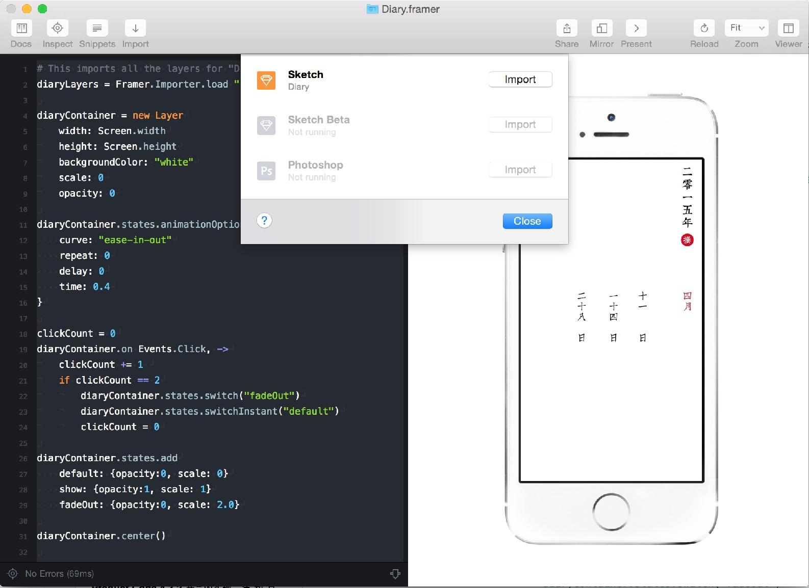

小记 的交互非常简单:
单击进入
双击返回
返回的时候采用放大，渐变的动画。
这两个交互在 iOS 系统上并不常见，开始之初会有一定的学习成本。
但是从另外一个角度，这个交互可以很好保护 App 所带来的时空感，避免突然被很现代的操作在两个时空拉扯，产生 “山寨” 的感觉。
所以虽然略有弊端，但是最后还是决定留下这个交互。
Sketch 里已经完成了界面的设计，剩下的就是导入到 Framer 里加工一下交互。
打开你的 Sketch 文件，然后切换到 FramerStudio 里，点击 File -> Import

这时候 Framer 自动根据我们的 Sketch 文件里对每个 Artboard 的命名生成了图层。
先把主页面显示出来
# 把 Diary 文件中所有的图层导入到 diaryLayers
diaryLayers = Framer.Importer.load "imported/Diary"
# 创建新的图层
container = new Layer
width: Screen.width # Screen 可以直接拿到设备的尺寸
height: Screen.height
backgroundColor: "#fff" ＃ 设置背景色为 #fff
container.center()
#使用 Framer 提供的 Center 函数居中显示Layer
diaryLayers.Month.visible = true # 使 Month 这个 Layer 显示
diaryLayers.Month.superLayer = container
# 使用 container 作为 Month 的父层
点击中间的日期后切换到日记页面
diaryLayers = Framer.Importer.load "imported/Diary"
diaryContainer = new Layer
width: Screen.width
height: Screen.height
backgroundColor: "white" ＃ 设置背景色为白色
scale: 0 # 设置缩放为 0 即最小化
opacity: 0 # 设置透明度为 0
diaryContainer.states.animationOptions = {
curve: "ease-in-out"
repeat: 0
delay: 0
time: 0.4
}
diaryContainer.states.add
default: {opacity:0, scale: 0}
show: {opacity:1, scale: 1}
fadeOut: {opacity:0, scale: 2.0}
diaryContainer.center()
diaryLayers.View.visible = true
diaryLayers.View.superLayer = diaryContainer
container = new Layer
width: Screen.width
height: Screen.height
backgroundColor: "#fff"
container.center()
diaryLayers.Month.visible = true
diaryLayers.Month.superLayer = container
diaryLayers.Month.on Events.Click, ->
diaryContainer.bringToFront() # 置顶显示
diaryContainer.states.switch("show") # 切换状态
双击日记页面后页面消失
clickCount = 0
diaryContainer.on Events.Click, ->
clickCount += 1
if clickCount == 2
diaryContainer.states.switch("fadeOut")
clickCount = 0
短短 50 行代码，Framer 和 Sketch 就可以迅速完成交互的原型，这个双击返回的交互贯彻在所有界面。
在制作原型的时候需要注意的一点是，只需要做出具体某个交互的演示效果即可，不需要 100% 正常工作，不然花费的精力可能甚至超过你在 iOS 里实现这个效果。
你可以从 这里 获取到 Framer 的工程源码。